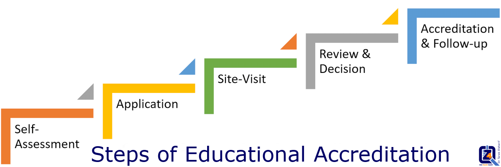

Educational Accreditation

Welcome to the 4Z-Pedia. Let's learn about quality accreditation of educational institutions. Many countries consider education as a component of its national security. Education is what raises the leaders of the society, its scholars, its protectors, its doctors, ....
What is Educational Accreditation:
- Educational accreditation is the process of evaluation and verification of the quality of services and operations of any educational institution or program by an external body, in order to determine whether applicable and recognized standards are met. If standards are fulfilled, accreditation is granted.
- To be accredited, schools or universities must undertake an extensive process that requires them to successfully pass quality indicators as: manage accurate institutional data, design high-standard courses, carry out periodical assessments to evaluate & enhance performance of students, provide top-level facilities, teaching aids, etc.
- Educational accreditation is performed in most countries by a governmental organization, usually the Ministry of Education.
- In the US, the government delegates instead the accreditation to private non-profit organizations (accreditors), all accreditors in the US must in turn be recognized by the National Advisory Committee on Institutional Quality and Integrity (NACIQI), which is a body of the U.S. Ministry of Education. That means that also in the US, accreditation is indirectly controlled by the government.
“Quality doesn't come randomly, it's an organized effort, a thoughtful planning, and a commitment to continuous improvement.”
Purposes of Accreditation:
- Academic Quality: Standards have been designed to enhance academic quality in schools and universities. Standards emphasize student achievement and high expectations of teaching and learning, research, service, and outreach.
- Accountability: Educational institutions seeking accreditation have accountability standards that are consistent, clear, and communicated to the public and the community. Results of educational outcomes are readily available and used in planning for change and enhancing the program.
- Planning and Improvement: Accredited Units are encouraged to plan, where needed, for change and for improving the learning environment. Units anticipate and address change in a timely and methodical manner. Student achievement is stressed.
Who benefits from Accreditation?
- The public can be assured that accredited programs are evaluated and inspected extensively and conform to the expectations of education.
- Students can identify and choose programs that meet quality standards of education.
- Institutions benefit from the self-evaluation and program improvement provided by the accreditation process and earn credibility.
- Any profession benefit from crucial input into the standards established for its future professionals.
What are the benefits of Accreditation?
- Accreditation determines whether an institution is meeting standards of education and provides official recognition by the community.
- Accreditation improves enrollment rate by winning trust of students & parents.
- Accreditation encourages strategic planning, identifies areas for improvement, and provides substantial information that can be used to support human or financial resource decisions.
- Accreditation is extremely significant in recruiting outstanding staff and students.
- Accreditation contributes to the assurance that graduates of these programs have proper preparation that meets nationally accepted standards and quality.
- Accreditation enhances program credibility and knowledge level of students.
- Accreditation helps traditional programs to cope with changes in the fast-developing academic world.
- Accreditation self-study and site-visit processes provide opportunities to help faculty members, unit personnel, and leadership to better understand programs offered by the institution.
- Accreditation helps ensure that the institution is a leader in education.
- Accreditation promotes self-improvement of educational institutions and program improvement.
- Accreditation can be a very strong factor in program retention discussions.
- Accreditation offers a competitive advantage for programs, students, and careers.
- Accreditation may affect the amount of state monies that the unit or institution receives.
Steps of educational Accreditation:
- Self-assessment: The institution that seeks an accreditation, should perform a self-assessment to its operational processes according to the relevant local or international standards. This can be done by their own staff, or with the help of an external quality consulting agency.
- Application for accreditation: The institution applies for accreditation and signs an agreement with the accrediting body.
- Eligibility for accreditation: The accrediting body examines documents sent by the institution (proof of compliance to the educational standards set forth by the accreditation body), and a review report is sent back to the institution.
- Site-visit: The accrediting body assign reviewers (number of reviewers varies according to the size of the institution and number of programs), then, a visit schedule is set up in coordination with the institution. Site-visit is executed, in which, interviews are conducted with students and staff, facilities and equipment are inspected, and documents are examined.
- Review report: After the site-visit, reviewers submit an initial report draft, that will be verified by consultants. Then, a copy with improvement recommendations, if any, is sent to the institution.
- Accreditation decision: Final report to recommend accreditation, if the institution fulfils the requirement is issued, the accreditation status of the institution is then announced.
- Periodic follow-up: The institution prepares an annual report on its status and efforts made to implement any recommendations of the accrediting body. Subsequently, the accrediting body examines the report, make a site-visit to the institution (if needed), and issues a follow-up report and send it to the institution. This ensures that the institution continue to adhere to high standards after initially earning accreditation.
Now after this overview of the general steps of educational accreditation, if you have any question about this topic,
Email us today at: support@the4z.com. We will be pleased to answer all your questions about quality of education.
Call 4Z for Quality today at (also on WhatsApp):
+973 3399 5807 or +90 5050 3040 16.